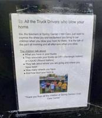

An anonymous reader quotes a report from TechCrunch: The French government agency that handles the issuing and management of citizens' identity documents, including national IDs, passports, and immigration documents, confirmed Wednesday that it experienced a data breach. In an announcement, the Agence Nationale des Titres Securises (ANTS) said the data stolen in the breach could include full names, dates and places of birth, mailing and email addresses, and phone numbers on an undisclosed number of citizens. ANTS said the investigation to determine how the breach happened and its impact is ongoing, and people whose data was affected are being notified.
ANTS, which said it detected the attack on April 15, did not specify how many people were affected by the breach. But some reporting suggests millions may have had some of their personal information stolen. According to Bleeping Computer, a hacker has advertised the stolen data on a hacking forum, claiming to have a database with 19 million records. The hacker's forum post referenced the same kind of stolen information as mentioned in ANTS' announcement and was published before ANTS publicly disclosed the breach on April 20.
Read more of this story at Slashdot.
In a recent town hall meeting reported by Bloomberg (paywalled), Apple CEO Tim Cook named the troubled 2012 launch of Apple Maps as his "first really big mistake" in the role. "The product wasn't ready, and we thought it was because we were testing more of local kind of stuff," Cook told staff. MacRumors reports: Reflecting on the debacle, Cook said it was "valuable," noting that he expressed regret to users at the time and suggested they use competing navigation apps instead.
"We apologized for it, and we said, 'Go use these other apps. They're better than ours.' And that was some humble pie," Cook said. "But it was the right thing for our users. And so it's an example of keeping the user at the center of the decisions that we made." Cook added: "Now we've got the best map app on the planet. We learned about persistence, and we did exactly the right thing having made the mistake."
Read more of this story at Slashdot.
Sony AI's autonomous table-tennis robot Ace has become the first robot to compete against top-level human players. Reuters reports: Ace, created by the Japanese company Sony's AI research division, is the first robot to attain expert-level performance in a competitive physical sport, one that requires rapid decisions and precision execution, the project's leader said. Ace did so by employing high-speed perception, AI-based control and a state-of-the-art robotic system. There have been various ping-pong-playing robots since 1983, but until now they were unable to rival highly skilled human competitors. Ace changed that with its performances against human elite-level and professional players in matches following the rules of the International Table Tennis Federation, the sport's governing body, and officiated by licensed umpires.
The project's goal was not only to compete at table tennis but to develop insights into how robots can perceive, plan and act with human-like speed and precision in dynamic environments. In matches detailed in the study, Ace in April 2025 won three out of five versus elite players and lost two matches against professional players, the top skill level in the sport. Sony AI said that since then Ace beat professional players in December 2025 and last month. "The success of Ace, with its perception system and learning-based control algorithm, suggests that similar techniques could be applied to other areas requiring fast, real-time control and human interaction -- such as manufacturing and service robotics, as well as applications across sports, entertainment and safety-critical physical domains," said Peter Durr, director of Sony AI Zurich and leader for Sony AI's project Ace.
The findings have been published in the journal Nature.
Read more of this story at Slashdot.
Bloomberg reports that a small group of unauthorized users gained access to Anthropic's restricted Mythos model through a mix of contractor-linked access and online sleuthing. Anthropic says it is investigating and has no evidence the access extended beyond a third-party vendor environment or affected its own systems. From the report: The users relied on a mix of tactics to get into Mythos. These included using access the person had as a worker at a third-party contractor for Anthropic and trying commonly used internet sleuthing tools often employed by cybersecurity researchers, the person said. The users are part of a private Discord channel that focuses on hunting for information about unreleased models, including by using bots to scour for details that Anthropic and others have posted on unsecured websites such as GitHub. [...] To access Mythos, the group of users made an educated guess about the model's online location based on knowledge about the format Anthropic has used for other models, the person said, adding that such details were revealed in a recent data breach from Mercor, an AI training startup that works with a number of top developers.
Crucially, the person also has permission to access Anthropic models and software related to evaluating the technology for the startup. They gained this access from a company for which they have performed contract work evaluating Anthropic's AI models. Bloomberg is not naming the company for security reasons. The group is interested in playing around with new models, not wreaking havoc with them, the person said. The group has not run cybersecurity-related prompts on the Mythos model, the person said, preferring instead to try tasks like building simple websites in an attempt to avoid detection by Anthropic. The person said the group also has access to a slew of other unreleased Anthropic AI models.
Read more of this story at Slashdot.
Longtime Slashdot reader mmarlett writes: The Atlantic has a long article on the story of missing scientists recently featured here on Slashdot. In short, it is an incoherent conspiracy theory that spreads wide and far, not paying any attention to boundaries of time, space, or area of expertise. "Which is all to say that another piece of flagrant nonsense has ascended to the highest levels of U.S. politics and media," writes the Atlantic's Daniel Engber. "To call it a conspiracy theory would be far too kind, because no comprehensive theory has been floated to explain the pattern of events. But then, even the phrase pattern of events is imprecise, because there is no pattern here at all. Given all the people who could have been roped into this narrative but weren't, any hope of finding meaning falls away. Barring any dramatic new disclosures, the mystery of the missing scientists has the dubious honor of being a sham in every way at once."
Read more of this story at Slashdot.
An anonymous reader quotes a report from Reuters: The Gates Foundation opened an external review earlier this year into its engagement with the late financier and convicted sex offender Jeffrey Epstein, the philanthropic group said on Tuesday. The foundation has been mired in controversy due to Chairman Bill Gates' association with Epstein. A release of emails in January by the U.S. Justice Department also showed communication between Epstein and the Gates Foundation's staff.
"Early this year, Gates Foundation CEO Mark Suzman commissioned an external review to assess past foundation engagement with Epstein, and our current policies for vetting and developing new philanthropic partnerships," the foundation said in a statement. "That review is underway, and we expect the board and management will receive an update this summer," it added. The Wall Street Journal, which first reported the news earlier on Tuesday, said Suzman told staff in a memo, "this is a challenging time for our organization in many ways, but it also highlights the critical importance of taking the tough actions now." The WSJ also reports that the Gates Foundation will eliminate up to 500 jobs, or about 20% of its staff, by 2030. It said the foundation has a 2026 budget of about $9 billion, but plans to cap operating expenses at $1.25 billion.
Further reading: The Bill Gates-Epstein Bombshell - and What Most People Get Wrong
Read more of this story at Slashdot.
Google announced two new tensor processing units (TPUs) for the "agentic era," with separate processors dedicated to training and inference. "With the rise of AI agents, we determined the community would benefit from chips individually specialized to the needs of training and serving," Amin Vahdat, a Google senior vice president and chief technologist for AI and infrastructure, said in a blog post. Both chips will become available later this year. CNBC reports: After years of producing chips that can both train artificial intelligence models and handle inference work, Google is separating those tasks into distinct processors, its latest effort to take on Nvidia in AI hardware. [...] None of the tech giants are displacing Nvidia, and Google isn't even comparing the performance of its new chips with those from the AI chip leader. Google did say the training chip enables 2.8 times the performance of the seventh-generation Ironwood TPU, announced in November, for the same price, while performance is 80% better for the inference processor.
Nvidia said its upcoming Groq 3 LPU hardware will draw on large quantities of static random-access memory, or SRAM, which is used by Cerebras, an AI chipmaker that filed to go public earlier this month. Google's new inference chip, dubbed TPU 8i, also relies on SRAM. Each chip contains 384 megabytes of SRAM, triple the amount in Ironwood. The architecture is designed "to deliver the massive throughput and low latency needed to concurrently run millions of agents cost-effectively," Sundar Pichai, CEO of Google parent Alphabet, wrote in a blog post.
Read more of this story at Slashdot.
A satirical but working tool called Malus uses AI to create "clean room" clones of open-source software, aiming to reproduce the same functionality while shedding attribution and copyleft obligations. "It works," Mike Nolan, one of the two people behind Malus, who researches the political economy of open source software and currently works for the United Nations, told 404 Media. "The Stripe charge will provide you the thing, and it was important for us to do that, because we felt that if it was just satire, it would end up like every other piece of research I've done on open source, which ends up being largely dismissed by open source tech workers who felt that they were too special and too unique and too intelligent to ever be the ones on the bad side of the layoffs or the economics of the situation." 404 Media reports: Malus's legal strategy for bypassing copyright is based on a historically pivotal moment for software and copyright law dating back to 1982. Back then, IBM dominated home computing, and competitors like Columbia Data Products wanted to sell products that were compatible with software that IBM customers were already using. Reverse engineering IBM's computer would have infringed on the company's copyright, so Columbia Data Products came up with what we now know as a "clean room" design.
It tasked one team with examining IBM's BIOS and creating specifications for what a clone of that system would require. A different "clean" team, one that was never exposed to IBM's code, then created BIOS that met those specifications from scratch. The result was a system that was compatible with IBM's ecosystem but didn't violate its copyright because it did not copy IBM's technical process and counted as original work.
This clean room method, which has been validated by case law and dramatized in the first season of Halt and Catch Fire, made computing more open and competitive than it would have been otherwise. But it has taken on new meaning in the age of generative AI. It is now easier than ever to ask AI tools to produce software that is identical in function to existing open source projects, and that, some would argue, are built from scratch and are therefore original work that can bypass existing copyright licenses. Others would say that software produced by large language models is inherently derivative, because like any LLM output, it is trained on the collective output of humans scraped from the internet, including specific open source projects.
Malus (pronounced malice), uses AI to do the same thing. "Finally, liberation from open source license obligations," Malus's site says. "Our proprietary AI robots independently recreate any open source project from scratch. The result? Legally distinct code with corporate-friendly licensing. No attribution. No copyleft. No problems." Copyleft is a type of copyright license that ensures reproductions or applications of the software keep it free to share and modify.
Read more of this story at Slashdot.
Microsoft plans to offer voluntary buyouts for the first time. According to CNBC, "about 7% of U.S. employees are eligible," with the program being "available to U.S. workers at the senior director level and below whose years of employment and age add up to 70 or higher." Further details will be provided on May 7. From the report: Last year Microsoft removed some costs through multiple rounds of layoffs. As of June 2025, the company had 228,000 employees. "Our hope is that this program gives those eligible the choice to take that next step on their own terms, with generous company support," Amy Coleman, Microsoft's executive vice president and chief people officer, wrote in a memo viewed by CNBC.
Additionally, Microsoft is adjusting the way it doles out stock to employees for annual rewards. The company will no longer make managers tie stock directly to cash bonuses. This way, "managers have more flexibility to meaningfully recognize high performance," Coleman wrote. The company is also simplifying the review process for managers, so they can choose from five pay options for employees instead of nine.
Read more of this story at Slashdot.
An anonymous reader quotes a report from the Associated Press: New York is suing Coinbase and Gemini, two of the newest players in the prediction market industry, arguing that the companies' unregulated and unlicensed platforms are illegal gambling operations. Attorney General Letitia James' lawsuit, filed Tuesday in state court in Manhattan, seeks to bar the companies' platforms from operating in the state unless and until they obtain licenses from the state Gaming Commission.
"Gambling by another name is still gambling, and it is not exempt from regulation under our state laws and Constitution," James said in a statement. "Gemini and Coinbase's so-called prediction markets are just illegal gambling operations, exposing young people to addictive platforms that lack the necessary guardrails." Both companies began as cryptocurrency trading platforms before branching into the prediction space, which has been dominated by Kalshi and Polymarket.
[...] New York's lawsuit alleges that the Coinbase and Gemini are seeking "to avoid the legal and financial consequences" of the state's close regulation of gambling "by offering what is quintessentially wagering under the guise of offering 'event contracts' on a 'prediction market.'" By operating without licenses, the lawsuit says, Coinbase's and Gemini's prediction market businesses aren't paying the same taxes as licensed casinos and mobile sportsbooks, which are taxed by the state at a rate of approximately 51% of gross revenues. In addition, the lawsuit says, Coinbase and Gemini allow users as young as 18, while state law prohibits wagering by anyone under 21.
Read more of this story at Slashdot.
Ancient Slashdot reader hwstar shares a report from The Conversation: For the first time ever, more than 50 nations will gather next week in Colombia to hash out how to wind down and end their dependence on coal, oil and gas. The history-making conference was planned before the Iran war. But this year's energy crisis has greatly raised the stakes. [...] Around 80% of the trapped oil was destined for the Asia-Pacific. Faced with dwindling supply, the region's governments are implementing emergency measures such as sending workers home, banning government travel, rationing fuel and cutting school hours. The problem is especially bad in the Pacific. Many island nations use diesel for power generation. In response, leaders declared a regional emergency.
[...] But the real difference from half a century ago is that fossil fuel alternatives are ready for prime time. Since the 1970s, the price of solar panels has fallen 99.9%, while the cost of wind has fallen 91% since 1984. Battery prices have fallen 99% since 1991. [...] This year's oil shock shows signs of creating an unplanned social tipping point -- a threshold for self-propelling change beyond which systems shift from one state to another. Climate scientists warn of climate tipping points which amplify feedback and accelerate warming. But social scientists also point to positive tipping points -- collective action that rapidly accelerates climate action.
[...] The routine burning of coal, oil and gas is the primary driver of the climate crisis. The world's highest court last year made clear nations have obligations to stop burning fossil fuels. But fossil fuels have barely been mentioned in 30 years of global climate negotiations, due in part to blocking efforts by big fossil fuel exporters and lobbyists. Frustrated by slow progress, a coalition of nations has bypassed global climate talks to discuss how to actually phase out fossil fuels. The first of these summits will take place next week. More than 50 nations will gather in Santa Marta, Colombia, to discuss a potential standalone treaty to manage fossil-fuel phaseout while protecting workers and financial systems.
Read more of this story at Slashdot.
alternative_right writes: A new technology has been proposed that could fundamentally solve the issue of smartphones overheating during high-spec gaming or extended video streaming. Researchers at KAIST have discovered the principle of processing signals using the minute vibrations of magnets (spin waves) instead of electrons. This method significantly reduces heat generation and power consumption while enabling instantaneous frequency switching within the several GHz range. This breakthrough is expected to pave the way for smart devices with less heat and longer battery life, as well as ultra-low-power, high-speed computing. Professor Kab-Jin Kim from the Department of Physics said: "This study is a case that proves we can implement and control the nonlinear dynamics of magnons -- the principle of information processing using magnetic vibrations -- in actual nano-devices, which had previously only been proposed in theory. It will serve as an important foundation for the development of a new information processing paradigm using spin waves instead of electrons."
The findings have been published in the journal Nature Communications.
Read more of this story at Slashdot.
An anonymous reader quotes a report from the Guardian: Nearly half of children in the United States are breathing dangerous levels of air pollution, according to a new report, as experts warned Donald Trump's expansive rollback of protections will make the situation worse. The 27th annual air quality report from the American Lung Association (ALA) released on Wednesday evaluates pollution across the country by grading levels of ground-level ozone -- also known as smog -- as well as year-round and short-term spikes in particle pollution, commonly referred to as soot. The report analyzed quality-assured data collected between 2022 and 2024. It found that 33.5 million children in the US -- 46% of those under 18 -- live in areas that received a failing grade for at least one measure of air pollution. The report also found that 7 million children, or 10% of all children in the US, live in communities that failed all three measures.
The report further found that communities of color are disproportionately exposed to unhealthy air. As a result, they are more likely to live with one or more chronic health conditions that make them more vulnerable to pollution, including asthma, diabetes, and heart disease. Although people of color make up 42.1% of the US population, they represent 54.2% of those living in counties with at least one failing grade, the report noted. It also found that a person of color is 2.42 times more likely than a white person to live in a community that fails all three pollution measures. Smog remains the most widespread pollutant affecting Americans' health. Between 2022 and 2024, 38% of the US population -- approximately 129.1 million people -- were exposed to ozone levels that put their health at risk. This marks the highest number recorded in the ALA's report in six years, and a 3.9 million increase from the previous year.
Several factors contributed to these unhealthy pollution levels, including extreme heat, drought and wildfires which have exposed a growing share of the population to harmful ozone, the report said. The regions most affected by high ozone levels include south-western states from California to Texas, as well as much of the midwest. This is mainly driven by smoke from Canada's 2023 wildfires crossing into the US, along with high temperatures and weather patterns that favored ozone formation in 2023 and 2024 -- particularly in southern states. More broadly, the report found that climate change is intensifying ozone pollution by boosting precursor emissions and creating atmospheric conditions such as higher temperatures and lower wind speeds that allow pollutants to build up and ozone to form. Another growing source of pollution: datacenters. The report notes how they rely on regional electricity grids where fossil fuels like methane gas and coal still account for a large portion of generation. Many datacenters also use dozens of large diesel-powered backup generators, which emit carcinogenic particulate matter.
"Children's lungs are still developing," said Will Barrett, assistant vice-president of the ALA's Nationwide Clean Air Policy. "For their body size, they're breathing more air. And also, kids play outdoors, they're more active, they're breathing in more outdoor air [...]. So, air pollution exposure in children can contribute to long-term developmental harm to their lungs, new cases of asthma, increased risks of respiratory illness and other health considerations later in life."
Read more of this story at Slashdot.
Ancient Slashdot reader Alain Williams shares a report from the BBC: The Trump family's World Liberty crypto venture is being sued by one of its billionaire backers over allegations of extortion. Justin Sun has accused World Liberty of an "illegal scheme" to seize his WLFI tokens, a cryptocurrency issued by the company. Sun alleges the firm, co-founded by U.S. President Donald Trump and his son Eric Trump, has "frozen" all of his tokens and stripped him of his right to vote on governance issues.
[...] Sun alleged that those running World Liberty, including another co-founder, Chase Herro, are using it as a "golden opportunity to leverage the Trump brand to profit through fraud." In his complaint, filed on Tuesday in a San Francisco federal court, Sun argues that initial promises to give token-holders the option to trade the currency in future "were false and misleading." While the tokens at large became tradeable, Sun said World Liberty has blocked him from being able to sell a single one, and is now threatening to "burn" his - deleting them entirely. WLFI said in a post on X: "Does anyone still believe @justinsuntron? Justin's favorite move is playing the victim while making baseless allegations to cover up his own misconduct. Same playbook, different target. WLFI isn't the first. We have the contracts. We have the evidence. We have the truth. See you in court pal."
Read more of this story at Slashdot.
An anonymous reader quotes a report from Reuters: Tesla CEO Elon Musk said on Wednesday the EV maker plans to use Intel's next-generation 14A manufacturing process to make chips at its Terafab project, an advanced AI chip complex Musk has envisioned in Austin. The contract would mark Intel's first major customer for the technology, a breakthrough for the chipmaker which has struggled to stand up its contract manufacturing business essential for taking on top rival TSMC. Intel CEO Lip Bu Tan has said that the company would exit the chip manufacturing business altogether if it failed to secure an external customer.
Intel has previously said it was in discussions with large customers about 14A, but has not yet disclosed a major external customer. It declined to comment on Musk's remarks. [...] "Given that by the time Terafab scales up, 14A will be probably fairly mature or ready for prime time," Musk said. "14A seems like the right move, and we have a great relationship with Intel," he said. Ben Bajarin, head of technology consultancy Creative Strategies, said that Intel's 14A technology could "turn out to be a bigger deal for Intel than folks thought." "It's important to have multiple partners as early design partners to help clean the pipe and work through needed learnings at the leading edge. They will definitely have scale, so a great first non-Intel customer," Bajarin said.
Seaport Research Partners analyst Jay Goldberg said Musk's vote of confidence in Intel's technology outweighed the unknowns about the Terafab project. "Having a customer is more important than the timing," he said. Goldberg said that Musk's lofty estimates of how many chips its robots could one day require may or may not materialize, but even making chips for Tesla's existing businesses would be a significant win for Intel. "It's not equivalent to Apple or Nvidia" in terms of chip volumes, Goldberg said. "But it's a real customer. It can be real volumes."
Read more of this story at Slashdot.
Kyle Jahner / Bloomberg Law : Music publishers including UMG, Warner Music, and Sony drop a copyright suit against Verizon following a SCOTUS decision limiting ISP liability in Cox's suit — Publishers representing the bulk of the music industry dropped a copyright lawsuit against Verizon Communications Inc. over music piracy …
Tom Warren / The Verge : Xbox CEO Asha Sharma and Chief Content Officer Matt Booty detail their “return of Xbox” strategy, including daily active players as its “new north star” — Microsoft's new Xbox leader starts to talk strategy for the company's gaming business.
Sydney Bradley / Business Insider : Instagram launched Instants, an app for sharing disappearing photos, in Italy this week, after rolling out an Instants feature in its main app in some regions — - Instagram launched a new app in Italy this week called “Instants.” — A hodgepodge of apps like Snapchat, Locket, and BeReal, the app is meant to be “low-pressure.”
OpenAI : OpenAI says “GPT-5.5 matches GPT-5.4 per-token latency in real-world serving, while performing at a much higher level of intelligence” — A new class of intelligence for real work — We're releasing GPT-5.5, our smartest and most intuitive to use model yet …
Anthropic : Anthropic says it has fixed three causes of recent Claude Code quality issues: reduced default reasoning, a caching bug, and a system prompt to reduce verbosity — We traced recent reports of Claude Code quality issues to three separate changes. Here's what happened and what we're changing.
Carl Franzen / VentureBeat : GPT-5.5 is priced at $5/1M input tokens and $30/1M output tokens, double GPT-5.4's pricing; GPT-5.5 Pro costs $30/1M input tokens and $180/1M output tokens — After months of rumors and reports that OpenAI was developing a new, more powerful AI large language model for use in ChatGPT …
The Verge : GPT-5.5 is rolling out to Plus, Pro, Business, and Enterprise users in ChatGPT and Codex, and GPT-5.5 Pro to Pro, Business, and Enterprise users in ChatGPT — The new model ‘excels’ at tasks like writing and debugging code and doing work across different tools.
Madison Mills / Axios : OpenAI says GPT-5.5's improvements are strongest in agentic coding, computer use, and early scientific research, which require reasoning across longer contexts — OpenAI on Thursday released its most capable model, GPT-5.5, codenamed “Spud,” just one week after competitor Anthropic launched its latest model.
Rachel Metz / Bloomberg : OpenAI launches GPT-5.5, designed to handle complex tasks with minimal guidance; the model will be used to power the company's upcoming “super app” — OpenAI is introducing an artificial intelligence model that's intended to be better at completing work without much direction …
Tom Warren / The Verge : At a town hall, Asha Sharma said Microsoft is returning to using Xbox for its gaming division, instead of Microsoft Gaming, as “Xbox needs to be our identity” — Xbox is Microsoft's gaming identity moving forward. … Xbox CEO Asha Sharma has had a busy week.
Kurt Wagner / Bloomberg : Memo: Meta plans to cut 10% of workers, or ~8,000 jobs, on May 20 and won't fill 6,000 open roles, in an effort to offset its AI spending and boost efficiency — Meta Platforms Inc. plans to cut 10% of workers, or roughly 8,000 employees, in an effort to boost efficiency and offset its heavy spending on artificial intelligence.
Jordan Novet / CNBC : Microsoft announces its first voluntary retirement program, for staff whose years of employment and age add up to 70+; source: 7% of US employees are eligible — Microsoft will offer voluntary buyouts to some U.S. employee, a first for the 51-year-old software giant, as the tech industry grapples …
Tom Warren / The Verge : A look at Microsoft's recent wave of executive departures, as it struggles to retain talent and changes its annual rewards and performance programs in response — Leadership reshuffling signals the mounting pressure on Microsoft's AI bet. … It feels like not a week has gone by this year without …
Greg Bensinger / Reuters : Internal memo: Amazon is replacing white-collar job titles at its Ring and Blink units with the designation “builder”, and “builder leaders” for managers — During Amazon's (AMZN.O) annual review season now under way, hundreds of employees will see their job titles stripped.
Kate Park / TechCrunch : Manila-based Salmon, a consumer finance app targeting underbanked Filipinos, raised $60M in equity and $40M in debt; it raised $310M to date, $160M in equity — The Philippines has millions of unbanked adults, and its consumer lending market is starting to catch up.